D44 student = D41 B fine-tuned 5k steps on SAGE plus 2,074 pseudo-labelled real ScanNet++ train chunks: stage-1 latents from D41 B + layout run as a teacher with privileged evidence (32 DSLR views, the full laser scan, oracle boxes; teacher labels). Test scenes are disjoint from the teacher's train scenes; same inputs as v2 at test (8 DSLR views + VGGT points; + layout = the oracle room boxes), stock stages 2 and 3. D44 + layout is the best row in 3D and 2D: CD 0.0601 (v2) / 0.0566 (B + layout) → 0.0530, F@10 0.849 → 0.865, better than B + layout in 101/136 scenes; depth MAE 0.0938 → 0.0826, normal° 22.88 → 21.91, LPIPS 0.488 → 0.476. Without boxes D44 (0.0553) already beats B + layout. The gains sit in both regions: completeness improves in observed and in unobserved space (unobserved recall 0.881 → 0.909), observed precision at 2 cm rises (0.251 → 0.272), false positives in unknown cells stay flat, and surface inside carved-free cells rises slightly (0.0211 → 0.0257). These numbers are on the Seen2Scene 137-scene split; the official-val rows (D46) need a D44 retrain without its 16 official-val teacher scenes. In the gallery, the largest gain (e050c15a8d) is a two-room scene where v2 and B leave the second room nearly empty with floating slabs; D44 fills part of it and D44 + layout fills it most completely, closest to the GT. In the largest loss (fd361ab85f) both D44 rows leave the ceiling open in the held-out views (black at the top; 2D completeness 0.999 → 0.944 with layout) where v2 and B close it — a failure mode to watch. The typical scenes look alike at this scale; object colours (chairs, clothes) vary between runs because stage 3 is stock in all five.
| run | CD ↓ | acc ↓ | compl ↓ | P ↑ | R ↑ | F@10 ↑ | NC ↑ | CD better than v2 |
|---|---|---|---|---|---|---|---|---|
| Complete3D-v2 (stock) | 0.0601 | 0.0613 | 0.0590 | 0.793 | 0.899 | 0.840 | 0.797 | — |
| D41 B | 0.0604 | 0.0608 | 0.0599 | 0.796 | 0.894 | 0.839 | 0.792 | 72/136 |
| D44 student | 0.0553 | 0.0586 | 0.0521 | 0.808 | 0.923 | 0.860 | 0.805 | 113/136 |
| D41 B + layout | 0.0566 | 0.0600 | 0.0531 | 0.800 | 0.909 | 0.849 | 0.800 | 87/136 |
| D44 + layout | 0.0530 | 0.0582 | 0.0477 | 0.808 | 0.935 | 0.865 | 0.811 | 114/136 |
CD = ½(accuracy + completeness), metres; P / R / F at 10 cm; predictions envelope-culled against the laser fusion (15 cm), 200 k area samples. Last column: scenes where the run's CD is lower than v2's.
| run | depth MAE ↓ | normal° ↓ | 2D compl ↑ | LPIPS ↓ |
|---|---|---|---|---|
| Complete3D-v2 (stock) | 0.0955 | 22.32 | 0.988 | 0.481 |
| D41 B | 0.1038 | 23.29 | 0.988 | 0.492 |
| D44 student | 0.0912 | 22.36 | 0.989 | 0.482 |
| D41 B + layout | 0.0938 | 22.88 | 0.992 | 0.488 |
| D44 + layout | 0.0826 | 21.91 | 0.991 | 0.476 |
2D completeness = the share of pixels where the GT mesh is visible that the prediction covers at all.
| run | obs P@2cm ↑ | obs P@5cm ↑ | obs P@10cm ↑ | obs R@10cm ↑ | obs CD ↓ | unobs CD ↓ | unobs P@10cm ↑ | unobs R@10cm ↑ |
|---|---|---|---|---|---|---|---|---|
| Complete3D-v2 (stock) | 0.236 | 0.552 | 0.805 | 0.912 | 0.0571 | 0.0667 | 0.753 | 0.870 |
| D41 B | 0.246 | 0.549 | 0.807 | 0.908 | 0.0571 | 0.0684 | 0.755 | 0.855 |
| D44 student | 0.265 | 0.581 | 0.818 | 0.937 | 0.0521 | 0.0637 | 0.768 | 0.885 |
| D41 B + layout | 0.251 | 0.557 | 0.810 | 0.919 | 0.0546 | 0.0629 | 0.760 | 0.881 |
| D44 + layout | 0.272 | 0.587 | 0.817 | 0.943 | 0.0508 | 0.0595 | 0.771 | 0.909 |
A GT sample is observed if any of the 8 input views sees it (81% of the GT on average). Observed precision = share of predicted samples in the observed region within the threshold of the GT; at 2 and 5 cm the distance is to the GT mesh surface (the GT samples' own spacing would floor it), at 10 cm to the GT samples.
| run | obs FP@2cm ↓ | obs FP@5cm ↓ | obs FP@10cm ↓ | FP@10 in unknown cells ↓ | FP@10 in carved-free cells ↓ | surface in carved-free cells ↓ |
|---|---|---|---|---|---|---|
| Complete3D-v2 (stock) | 0.764 | 0.448 | 0.195 | 0.1143 | 0.0033 | 0.0246 |
| D41 B | 0.754 | 0.451 | 0.193 | 0.1082 | 0.0026 | 0.0199 |
| D44 student | 0.735 | 0.419 | 0.182 | 0.1068 | 0.0026 | 0.0235 |
| D41 B + layout | 0.749 | 0.443 | 0.190 | 0.1071 | 0.0026 | 0.0211 |
| D44 + layout | 0.728 | 0.413 | 0.183 | 0.1072 | 0.0027 | 0.0257 |
Observed-region false positives (predicted samples farther than the threshold from the GT). Cells: the input's own evidence at 16 cm (carved free = a ray from a camera passed through it) and 32 cm (unknown = neither seen occupied nor carved); the last three columns are shares of all predicted samples.
Scenes: per-scene CD change (D44 + layout − B + layout) on the paired set → the two largest gains, the two closest to the median, the two largest losses. Orbit: one shared camera path, textured meshes, ceiling and upper walls cut away. Frames: official DSLR test frames (never input views); black = no surface.
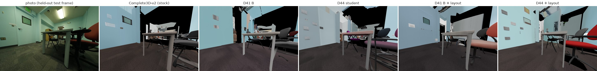
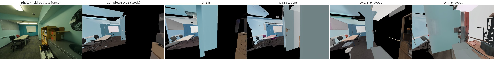
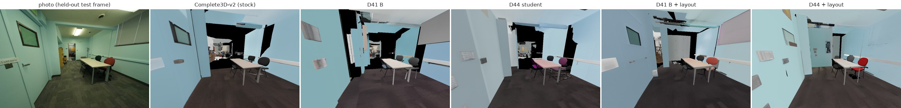
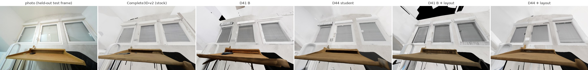
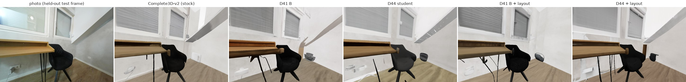
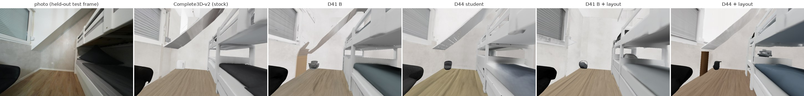
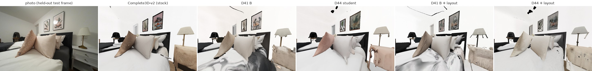
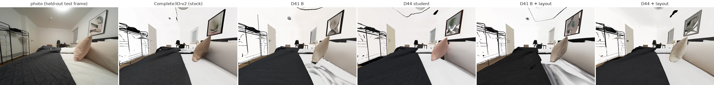
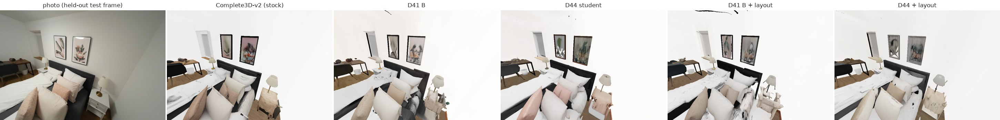
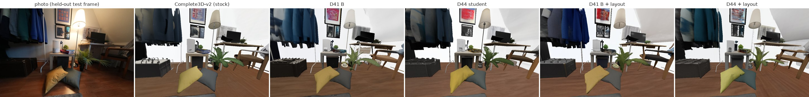
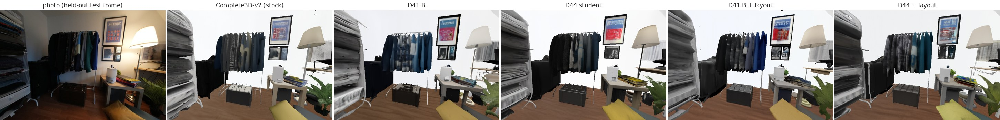
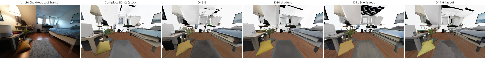
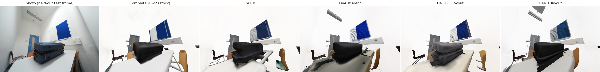
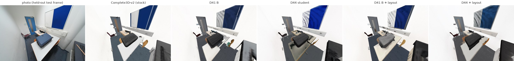
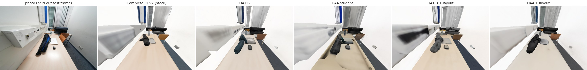
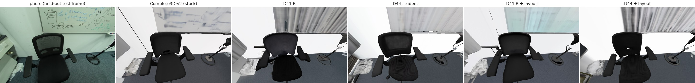
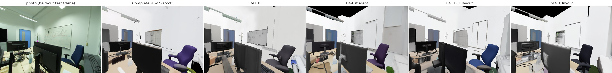
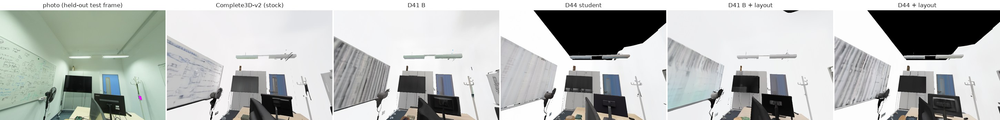
| scene | CD v2 | CD B | CD D44 | CD B + layout | CD D44 + layout | Δ CD (D44 + layout − B + layout) | LPIPS v2 | LPIPS B | LPIPS D44 | LPIPS B + layout | LPIPS D44 + layout |
|---|---|---|---|---|---|---|---|---|---|---|---|
| dbd2a5961f | 0.0740 | 0.0729 | 0.0554 | 0.0699 | 0.0540 | -0.0159 | 0.373 | 0.377 | 0.371 | 0.378 | 0.388 |
| dbd97b5bca | 0.0521 | 0.0523 | 0.0521 | 0.0534 | 0.0514 | -0.0020 | 0.522 | 0.535 | 0.527 | 0.525 | 0.521 |
| dc204f59ae | 0.0842 | 0.0942 | 0.0867 | 0.0951 | 0.0883 | -0.0068 | 0.500 | 0.510 | 0.494 | 0.499 | 0.509 |
| dc263dfbf0 | 0.0579 | 0.0554 | 0.0549 | 0.0563 | 0.0540 | -0.0023 | 0.430 | 0.456 | 0.431 | 0.448 | 0.426 |
| dc5f00843f | 0.0564 | 0.0564 | 0.0535 | 0.0548 | 0.0528 | -0.0019 | 0.381 | 0.407 | 0.398 | 0.402 | 0.389 |
| dd636ce603 | 0.0640 | 0.0747 | 0.0558 | 0.0738 | 0.0477 | -0.0261 | 0.495 | 0.557 | 0.481 | 0.515 | 0.476 |
| dd685be466 | 0.0465 | 0.0460 | 0.0416 | 0.0434 | 0.0402 | -0.0032 | 0.451 | 0.466 | 0.434 | 0.432 | 0.447 |
| de3c77cecd | 0.0958 | 0.0908 | 0.0905 | 0.0969 | 0.1022 | 0.0053 | 0.494 | 0.492 | 0.497 | 0.509 | 0.497 |
| de5881aa12 | 0.0485 | 0.0468 | 0.0466 | 0.0475 | 0.0444 | -0.0031 | 0.416 | 0.427 | 0.425 | 0.425 | 0.434 |
| de7dc9993f | 0.0530 | 0.0570 | 0.0499 | 0.0573 | 0.0484 | -0.0089 | 0.378 | 0.394 | 0.370 | 0.374 | 0.374 |
| de83a9c2d7 | 0.0534 | 0.0555 | 0.0469 | 0.0548 | 0.0472 | -0.0077 | 0.325 | 0.333 | 0.324 | 0.353 | 0.331 |
| deb1867829 | 0.0567 | 0.0713 | 0.0541 | 0.0537 | 0.0646 | 0.0109 | 0.442 | 0.471 | 0.432 | 0.434 | 0.428 |
| dec0b11090 | 0.0613 | 0.0695 | 0.0596 | 0.0697 | 0.0582 | -0.0115 | 0.443 | 0.460 | 0.446 | 0.467 | 0.443 |
| defd3457db | 0.1154 | 0.1278 | 0.1209 | 0.1275 | 0.1113 | -0.0163 | 0.499 | 0.534 | 0.502 | 0.526 | 0.479 |
| dfa70fb232 | 0.0644 | 0.0740 | 0.0641 | 0.0689 | 0.0629 | -0.0059 | 0.479 | 0.478 | 0.462 | 0.482 | 0.440 |
| dfac5b38df | 0.0453 | 0.0415 | 0.0411 | 0.0414 | 0.0417 | 0.0003 | 0.468 | 0.476 | 0.474 | 0.471 | 0.478 |
| e01b287af5 | 0.0437 | 0.0380 | 0.0426 | 0.0354 | 0.0422 | 0.0068 | 0.433 | 0.450 | 0.434 | 0.451 | 0.444 |
| e050c15a8d | 0.1932 | 0.1901 | 0.1253 | 0.1038 | 0.0731 | -0.0307 | 0.631 | 0.644 | 0.613 | 0.614 | 0.601 |
| e0abd740ba | 0.0360 | 0.0380 | 0.0391 | 0.0398 | 0.0381 | -0.0017 | 0.372 | 0.379 | 0.393 | 0.380 | 0.361 |
| e0d1ed2159 | 0.0419 | 0.0401 | 0.0377 | 0.0405 | 0.0361 | -0.0043 | 0.441 | 0.492 | 0.477 | 0.506 | 0.458 |
| e0de253456 | 0.0396 | 0.0413 | 0.0365 | 0.0401 | 0.0374 | -0.0027 | 0.609 | 0.611 | 0.642 | 0.637 | 0.612 |
| e1aa584dd5 | 0.0428 | 0.0476 | 0.0402 | 0.0481 | 0.0378 | -0.0102 | 0.470 | 0.494 | 0.462 | 0.459 | 0.481 |
| e1b1d9de55 | 0.0540 | 0.0537 | 0.0558 | 0.0534 | 0.0550 | 0.0016 | 0.492 | 0.495 | 0.489 | 0.489 | 0.469 |
| e1fb8626c8 | 0.0840 | 0.0837 | 0.0634 | 0.0859 | 0.0631 | -0.0228 | 0.371 | 0.374 | 0.358 | 0.374 | 0.379 |
| e2caaaf5b5 | 0.0525 | 0.0502 | 0.0485 | 0.0495 | 0.0475 | -0.0020 | 0.457 | 0.471 | 0.473 | 0.465 | 0.453 |
| e35232b92f | 0.0513 | 0.0504 | 0.0486 | 0.0486 | 0.0461 | -0.0024 | 0.538 | 0.553 | 0.551 | 0.539 | 0.556 |
| e398684d27 | 0.0524 | 0.0593 | 0.0503 | 0.0554 | 0.0470 | -0.0084 | 0.540 | 0.501 | 0.482 | 0.501 | 0.501 |
| e3ad7115db | 0.0521 | 0.0502 | 0.0483 | 0.0494 | 0.0506 | 0.0011 | 0.483 | 0.498 | 0.476 | 0.469 | 0.474 |
| e3b3b0d0c7 | 0.2294 | 0.2475 | 0.2050 | 0.1073 | 0.0984 | -0.0089 | 0.638 | 0.662 | 0.669 | 0.630 | 0.617 |
| e3c1da58dd | 0.0690 | 0.0705 | 0.0533 | 0.0665 | 0.0542 | -0.0124 | 0.411 | 0.407 | 0.402 | 0.404 | 0.379 |
| e3c39f4aea | 0.0564 | 0.0610 | 0.0526 | 0.0569 | 0.0518 | -0.0050 | 0.488 | 0.498 | 0.491 | 0.499 | 0.494 |
| e3ecd49e2b | 0.0502 | 0.0505 | 0.0500 | 0.0515 | 0.0500 | -0.0016 | 0.490 | 0.487 | 0.487 | 0.477 | 0.476 |
| e3ef8b690b | 0.0507 | 0.0502 | 0.0467 | 0.0485 | 0.0436 | -0.0049 | 0.433 | 0.423 | 0.422 | 0.407 | 0.387 |
| e4007ff6b5 | 0.0621 | 0.0691 | 0.0618 | 0.0628 | 0.0524 | -0.0104 | 0.535 | 0.569 | 0.544 | 0.523 | 0.515 |
| e4e625a3e4 | 0.0466 | 0.0487 | 0.0433 | 0.0509 | 0.0445 | -0.0064 | 0.443 | 0.427 | 0.431 | 0.445 | 0.422 |
| e4fb2a623b | 0.0499 | 0.0471 | 0.0452 | 0.0475 | 0.0453 | -0.0022 | 0.429 | 0.452 | 0.444 | 0.452 | 0.451 |
| e51b753e48 | 0.0542 | 0.0549 | 0.0502 | 0.0527 | 0.0513 | -0.0014 | 0.588 | 0.587 | 0.579 | 0.584 | 0.577 |
| e5a769dbf5 | 0.0631 | 0.0459 | 0.0438 | 0.0566 | 0.0499 | -0.0067 | 0.332 | 0.366 | 0.350 | 0.350 | 0.328 |
| e6372539da | 0.0520 | 0.0507 | 0.0466 | 0.0493 | 0.0452 | -0.0041 | 0.460 | 0.455 | 0.449 | 0.448 | 0.447 |
| e6671918c8 | 0.0500 | 0.0496 | 0.0462 | 0.0471 | 0.0419 | -0.0052 | 0.586 | 0.608 | 0.601 | 0.593 | 0.593 |
| e667e09fe6 | 0.0601 | 0.0613 | 0.0541 | 0.0587 | 0.0526 | -0.0061 | 0.509 | 0.517 | 0.498 | 0.517 | 0.485 |
| e69064f2f3 | 0.0546 | 0.0507 | 0.0456 | 0.0546 | 0.0434 | -0.0112 | 0.555 | 0.572 | 0.574 | 0.583 | 0.563 |
| e7ac609391 | 0.0661 | 0.0998 | 0.0799 | 0.0695 | 0.0623 | -0.0072 | 0.723 | 0.788 | 0.743 | 0.756 | 0.712 |
| e7af285f7d | 0.0745 | 0.0678 | 0.0618 | 0.0636 | 0.0562 | -0.0073 | 0.560 | 0.603 | 0.587 | 0.571 | 0.579 |
| e7ccd75e5d | 0.0507 | 0.0478 | 0.0485 | 0.0484 | 0.0483 | -0.0001 | 0.435 | 0.445 | 0.441 | 0.443 | 0.432 |
| e7d7e7799d | 0.0493 | 0.0456 | 0.0417 | 0.0458 | 0.0428 | -0.0030 | 0.523 | 0.513 | 0.501 | 0.518 | 0.499 |
| e814070fd4 | 0.0496 | 0.0580 | 0.0530 | 0.0537 | 0.0445 | -0.0092 | 0.372 | 0.395 | 0.390 | 0.384 | 0.374 |
| e81c8b3eec | 0.0437 | 0.0435 | 0.0415 | 0.0435 | 0.0419 | -0.0016 | 0.482 | 0.502 | 0.482 | 0.500 | 0.478 |
| e86c6742b9 | 0.0766 | 0.0715 | 0.0530 | 0.0804 | 0.0514 | -0.0290 | 0.406 | 0.413 | 0.411 | 0.444 | 0.407 |
| e87f1ebcac | 0.0608 | 0.0721 | 0.0548 | 0.0727 | 0.0525 | -0.0202 | 0.560 | 0.565 | 0.510 | 0.555 | 0.510 |
| e898c76c1f | 0.0569 | 0.0480 | 0.0483 | 0.0430 | 0.0479 | 0.0049 | 0.371 | 0.393 | 0.383 | 0.398 | 0.387 |
| e8e81396b6 | 0.0417 | 0.0426 | 0.0419 | 0.0423 | 0.0414 | -0.0008 | 0.538 | 0.562 | 0.539 | 0.542 | 0.542 |
| e8ea9b4da8 | 0.0485 | 0.0415 | 0.0395 | 0.0425 | 0.0400 | -0.0025 | 0.598 | 0.585 | 0.605 | 0.591 | 0.598 |
| e909f8213d | 0.0460 | 0.0450 | 0.0383 | 0.0389 | 0.0387 | -0.0002 | 0.505 | 0.532 | 0.518 | 0.520 | 0.515 |
| e91722b5a3 | 0.0692 | 0.0703 | 0.0657 | 0.0668 | 0.0627 | -0.0041 | 0.467 | 0.464 | 0.468 | 0.468 | 0.459 |
| e93cd5230e | 0.0631 | 0.0637 | 0.0573 | 0.0680 | 0.0573 | -0.0107 | 0.424 | 0.393 | 0.409 | 0.405 | 0.392 |
| e945643bef | 0.0454 | 0.0470 | 0.0452 | 0.0458 | 0.0508 | 0.0050 | 0.419 | 0.443 | 0.413 | 0.422 | 0.420 |
| e9ac2fc517 | 0.0770 | 0.0806 | 0.0801 | 0.0782 | 0.0826 | 0.0044 | 0.571 | 0.574 | 0.561 | 0.565 | 0.566 |
| e9e16b6043 | 0.0531 | 0.0440 | 0.0404 | 0.0421 | 0.0398 | -0.0023 | 0.548 | 0.545 | 0.552 | 0.554 | 0.547 |
| ea3b3710a2 | 0.0451 | 0.0432 | 0.0435 | 0.0428 | 0.0432 | 0.0004 | 0.547 | 0.529 | 0.530 | 0.545 | 0.536 |
| ea42cd27e6 | 0.0460 | 0.0507 | 0.0449 | 0.0476 | 0.0445 | -0.0031 | 0.405 | 0.430 | 0.400 | 0.428 | 0.387 |
| eaa6c90310 | 0.0463 | 0.0469 | 0.0407 | 0.0457 | 0.0394 | -0.0063 | 0.542 | 0.531 | 0.547 | 0.542 | 0.529 |
| eaab7bcc15 | 0.0609 | 0.0581 | 0.0489 | 0.0562 | 0.0463 | -0.0098 | 0.515 | 0.527 | 0.499 | 0.533 | 0.512 |
| eab5494dca | 0.0587 | 0.0581 | 0.0523 | 0.0563 | 0.0489 | -0.0074 | 0.550 | 0.532 | 0.522 | 0.524 | 0.522 |
| eb4bc76767 | 0.0521 | 0.0441 | 0.0411 | 0.0444 | 0.0423 | -0.0021 | 0.558 | 0.533 | 0.558 | 0.547 | 0.541 |
| eb8ef9b4cc | 0.0379 | 0.0407 | 0.0370 | 0.0393 | 0.0360 | -0.0033 | 0.406 | 0.404 | 0.397 | 0.410 | 0.399 |
| ebc200e928 | 0.0519 | 0.0482 | 0.0485 | 0.0478 | 0.0488 | 0.0010 | 0.446 | 0.464 | 0.435 | 0.483 | 0.480 |
| ec2cb8dae1 | 0.0567 | 0.0516 | 0.0487 | 0.0510 | 0.0488 | -0.0022 | 0.439 | 0.472 | 0.446 | 0.479 | 0.451 |
| ec614d4e30 | 0.0489 | 0.0412 | 0.0505 | 0.0397 | 0.0517 | 0.0120 | 0.433 | 0.433 | 0.425 | 0.425 | 0.421 |
| ec9ff6051d | 0.0471 | 0.0505 | 0.0419 | 0.0484 | 0.0429 | -0.0055 | 0.507 | 0.510 | 0.496 | 0.498 | 0.513 |
| ed2216380b | 0.0644 | 0.0485 | 0.0524 | 0.0488 | 0.0532 | 0.0044 | 0.394 | 0.404 | 0.411 | 0.409 | 0.406 |
| edbf65c385 | 0.0560 | 0.0469 | 0.0460 | 0.0474 | 0.0454 | -0.0020 | 0.519 | 0.534 | 0.514 | 0.531 | 0.528 |
| edced53026 | 0.0474 | 0.0444 | 0.0477 | 0.0460 | 0.0475 | 0.0014 | 0.456 | 0.457 | 0.464 | 0.461 | 0.453 |
| eea4ad9c04 | 0.0766 | 0.0690 | 0.0660 | 0.0684 | 0.0571 | -0.0114 | 0.551 | 0.534 | 0.529 | 0.544 | 0.525 |
| eee7eef8e5 | 0.0779 | 0.0749 | 0.0742 | 0.0746 | 0.0737 | -0.0009 | 0.508 | 0.486 | 0.491 | 0.486 | 0.491 |
| eeeb9836b8 | 0.0450 | 0.0505 | 0.0444 | 0.0469 | 0.0416 | -0.0053 | 0.446 | 0.513 | 0.487 | 0.488 | 0.468 |
| ef18cf0708 | 0.0782 | 0.0937 | 0.1026 | 0.0926 | 0.0869 | -0.0057 | 0.449 | 0.469 | 0.449 | 0.468 | 0.435 |
| ef25276c25 | 0.0569 | 0.0538 | 0.0549 | 0.0530 | 0.0543 | 0.0013 | 0.504 | 0.506 | 0.494 | 0.509 | 0.493 |
| ef60db4e8c | 0.0589 | 0.0586 | 0.0609 | 0.0565 | 0.0541 | -0.0024 | 0.520 | 0.509 | 0.516 | 0.515 | 0.517 |
| ef69d58016 | 0.0473 | 0.0467 | 0.0431 | 0.0461 | 0.0430 | -0.0031 | 0.579 | 0.572 | 0.576 | 0.580 | 0.561 |
| ef9428c5cd | 0.0643 | 0.0718 | 0.0527 | 0.0722 | 0.0523 | -0.0200 | 0.419 | 0.425 | 0.425 | 0.430 | 0.428 |
| f07340dfea | 0.0472 | 0.0486 | 0.0449 | 0.0489 | 0.0451 | -0.0038 | 0.411 | 0.434 | 0.425 | 0.451 | 0.422 |
| f19ca0a52e | 0.0409 | 0.0413 | 0.0392 | 0.0409 | 0.0378 | -0.0031 | 0.385 | 0.389 | 0.414 | 0.386 | 0.365 |
| f1e01af60a | 0.0479 | 0.0521 | 0.0504 | 0.0516 | 0.0459 | -0.0057 | 0.474 | 0.480 | 0.482 | 0.496 | 0.498 |
| f1efd25854 | 0.0450 | 0.0385 | 0.0423 | 0.0383 | 0.0424 | 0.0041 | 0.432 | 0.391 | 0.425 | 0.422 | 0.442 |
| f20ccd91de | 0.0500 | 0.0475 | 0.0472 | 0.0474 | 0.0466 | -0.0009 | 0.537 | 0.554 | 0.551 | 0.538 | 0.540 |
| f248c2bcdc | 0.0772 | 0.0741 | 0.0645 | 0.0654 | 0.0631 | -0.0022 | 0.574 | 0.580 | 0.583 | 0.571 | 0.585 |
| f25f5e6f63 | 0.0592 | 0.0551 | 0.0553 | 0.0555 | 0.0547 | -0.0009 | 0.498 | 0.515 | 0.513 | 0.515 | 0.506 |
| f2dc06b1d2 | 0.0394 | 0.0452 | 0.0425 | 0.0422 | 0.0427 | 0.0005 | 0.552 | 0.564 | 0.554 | 0.569 | 0.553 |
| f2e6c43543 | 0.0805 | 0.0946 | 0.0714 | 0.0804 | 0.0716 | -0.0088 | 0.559 | 0.570 | 0.543 | 0.526 | 0.513 |
| f2ec1f6a04 | 0.0490 | 0.0444 | 0.0435 | 0.0447 | 0.0440 | -0.0006 | 0.400 | 0.420 | 0.407 | 0.408 | 0.414 |
| f311090fa6 | 0.0507 | 0.0484 | 0.0444 | 0.0471 | 0.0444 | -0.0028 | 0.501 | 0.527 | 0.490 | 0.512 | 0.479 |
| f33e242463 | 0.0597 | 0.0502 | 0.0522 | 0.0525 | 0.0508 | -0.0017 | 0.393 | 0.445 | 0.482 | 0.464 | 0.432 |
| f34d532901 | 0.0618 | 0.0515 | 0.0506 | 0.0508 | 0.0510 | 0.0002 | 0.461 | 0.463 | 0.445 | 0.475 | 0.455 |
| f3685d06a9 | 0.0436 | 0.0458 | 0.0430 | 0.0461 | 0.0434 | -0.0027 | 0.553 | 0.574 | 0.564 | 0.540 | 0.546 |
| f368a1f730 | 0.0400 | 0.0362 | 0.0348 | 0.0369 | 0.0357 | -0.0012 | 0.509 | 0.519 | 0.523 | 0.527 | 0.524 |
| f36e3e1e53 | 0.0492 | 0.0541 | 0.0472 | 0.0563 | 0.0477 | -0.0086 | 0.483 | 0.513 | 0.475 | 0.500 | 0.475 |
| f38b0108a1 | 0.0646 | 0.0720 | 0.0641 | 0.0633 | 0.0674 | 0.0041 | 0.485 | 0.495 | 0.496 | 0.488 | 0.489 |
| f3d64c30f8 | 0.1693 | 0.1725 | 0.1700 | 0.1696 | 0.1709 | 0.0013 | 0.495 | 0.512 | 0.496 | 0.493 | 0.485 |
| f3f016ba3f | 0.0436 | 0.0436 | 0.0425 | 0.0432 | 0.0394 | -0.0038 | 0.395 | 0.402 | 0.394 | 0.394 | 0.399 |
| f47ec86138 | 0.0706 | 0.0573 | 0.0497 | 0.0552 | 0.0500 | -0.0052 | 0.433 | 0.427 | 0.405 | 0.407 | 0.404 |
| f4c5b0646f | 0.0427 | 0.0440 | 0.0408 | 0.0435 | 0.0407 | -0.0029 | 0.437 | 0.468 | 0.462 | 0.481 | 0.466 |
| f5401524e5 | 0.0418 | 0.0425 | 0.0404 | 0.0423 | 0.0418 | -0.0005 | 0.527 | 0.544 | 0.544 | 0.548 | 0.529 |
| f5726eeeb2 | 0.0459 | 0.0404 | 0.0401 | 0.0402 | 0.0391 | -0.0011 | 0.510 | 0.502 | 0.511 | 0.510 | 0.490 |
| f576071590 | 0.0493 | 0.0503 | 0.0457 | 0.0457 | 0.0497 | 0.0040 | 0.448 | 0.470 | 0.443 | 0.459 | 0.453 |
| f6659a3107 | 0.0546 | 0.0550 | 0.0585 | 0.0544 | 0.0579 | 0.0035 | 0.411 | 0.428 | 0.399 | 0.410 | 0.419 |
| f6a9b64a0d | 0.0516 | 0.0496 | 0.0454 | 0.0461 | 0.0413 | -0.0048 | 0.589 | 0.580 | 0.591 | 0.592 | 0.590 |
| f7d34e6706 | 0.0623 | 0.0742 | 0.0572 | 0.0662 | 0.0569 | -0.0093 | 0.525 | 0.546 | 0.537 | 0.541 | 0.520 |
| f7da3f0714 | 0.0515 | 0.0506 | 0.0470 | 0.0495 | 0.0470 | -0.0025 | 0.490 | 0.481 | 0.490 | 0.494 | 0.485 |
| f8062cb7ce | 0.1284 | 0.1272 | 0.1268 | 0.1224 | 0.1262 | 0.0037 | 0.431 | 0.420 | 0.412 | 0.406 | 0.419 |
| f847086d15 | 0.0426 | 0.0428 | 0.0413 | 0.0416 | 0.0418 | 0.0002 | 0.415 | 0.421 | 0.411 | 0.428 | 0.408 |
| f8d5147d1d | 0.0383 | 0.0405 | 0.0408 | 0.0388 | 0.0407 | 0.0019 | 0.341 | 0.351 | 0.338 | 0.349 | 0.331 |
| f8e13ab4ae | 0.0419 | 0.0407 | 0.0413 | 0.0408 | 0.0411 | 0.0002 | 0.423 | 0.430 | 0.417 | 0.425 | 0.395 |
| f8eac0ad24 | 0.0431 | 0.0424 | 0.0416 | 0.0414 | 0.0400 | -0.0014 | 0.463 | 0.465 | 0.466 | 0.469 | 0.446 |
| f8f12e4e6b | 0.0470 | 0.0499 | 0.0481 | 0.0507 | 0.0471 | -0.0036 | 0.466 | 0.475 | 0.443 | 0.478 | 0.450 |
| f9397af4cb | 0.0538 | 0.0498 | 0.0456 | 0.0476 | 0.0450 | -0.0026 | 0.453 | 0.464 | 0.463 | 0.478 | 0.451 |
| f97de2c3e9 | 0.0637 | 0.0680 | 0.0565 | 0.0649 | 0.0535 | -0.0114 | 0.585 | 0.611 | 0.587 | 0.602 | 0.561 |
| f9f95681fd | 0.0373 | 0.0381 | 0.0327 | 0.0381 | 0.0335 | -0.0046 | 0.462 | 0.473 | 0.473 | 0.476 | 0.463 |
| faba6e97d7 | 0.0454 | 0.0431 | 0.0414 | 0.0429 | 0.0431 | 0.0002 | 0.417 | 0.443 | 0.428 | 0.453 | 0.421 |
| faec2f0468 | 0.0945 | 0.1107 | 0.0936 | 0.0892 | 0.0833 | -0.0059 | 0.645 | 0.691 | 0.647 | 0.665 | 0.644 |
| fb05e13ad1 | 0.0452 | 0.0459 | 0.0458 | 0.0465 | 0.0468 | 0.0003 | 0.436 | 0.442 | 0.437 | 0.441 | 0.450 |
| fb152519ad | 0.0729 | 0.0722 | 0.0600 | 0.0665 | 0.0545 | -0.0120 | 0.575 | 0.574 | 0.574 | 0.575 | 0.567 |
| fb564c935d | 0.0558 | 0.0537 | 0.0525 | 0.0524 | 0.0510 | -0.0014 | 0.448 | 0.444 | 0.451 | 0.438 | 0.465 |
| fb5a96b1a2 | 0.0601 | 0.0560 | 0.0587 | 0.0545 | 0.0579 | 0.0033 | 0.440 | 0.439 | 0.438 | 0.437 | 0.439 |
| fb893ffaf3 | 0.0941 | 0.0936 | 0.0821 | 0.0842 | 0.0759 | -0.0083 | 0.603 | 0.630 | 0.611 | 0.602 | 0.595 |
| fb9b4c2f15 | 0.0446 | 0.0397 | 0.0390 | 0.0379 | 0.0386 | 0.0007 | 0.436 | 0.412 | 0.430 | 0.431 | 0.416 |
| fc2875ea52 | 0.0713 | 0.0804 | 0.0565 | 0.0600 | 0.0542 | -0.0058 | 0.515 | 0.612 | 0.534 | 0.547 | 0.536 |
| fc85fb414c | 0.0479 | 0.0481 | 0.0476 | 0.0478 | 0.0488 | 0.0010 | 0.413 | 0.422 | 0.397 | 0.421 | 0.394 |
| fd361ab85f | 0.0572 | 0.0561 | 0.0761 | 0.0582 | 0.0751 | 0.0169 | 0.486 | 0.488 | 0.502 | 0.482 | 0.502 |
| fd8560cfd6 | 0.0494 | 0.0527 | 0.0567 | 0.0505 | 0.0573 | 0.0069 | 0.483 | 0.525 | 0.524 | 0.509 | 0.496 |
| fde8a3b4c0 | 0.0827 | 0.0958 | 0.0792 | 0.0685 | 0.0709 | 0.0024 | 0.553 | 0.558 | 0.548 | 0.552 | 0.536 |
| fdf7f5cd5d | 0.0636 | 0.0644 | 0.0587 | 0.0584 | 0.0578 | -0.0006 | 0.428 | 0.450 | 0.436 | 0.427 | 0.426 |
| fe1733741f | 0.0825 | 0.0807 | 0.0811 | 0.0800 | 0.0765 | -0.0035 | 0.573 | 0.580 | 0.577 | 0.593 | 0.565 |
| fe3fc057a1 | 0.0490 | 0.0468 | 0.0569 | 0.0472 | 0.0450 | -0.0022 | 0.517 | 0.528 | 0.507 | 0.515 | 0.507 |
| fe5fe0a8a4 | 0.1211 | 0.0838 | 0.0625 | 0.0583 | 0.0634 | 0.0051 | 0.498 | 0.502 | 0.471 | 0.474 | 0.460 |
| ff17657f71 | 0.0387 | 0.0409 | 0.0375 | 0.0412 | 0.0385 | -0.0027 | 0.393 | 0.406 | 0.401 | 0.398 | 0.379 |
Source: experiments/genrecon_eval/results/<run>/scannetpp/{summary.csv, 2d/summary_2d.csv, viewsplit/} and results/diag_v2_observed_fp_cells/<run>/; table values in data/metrics.json.